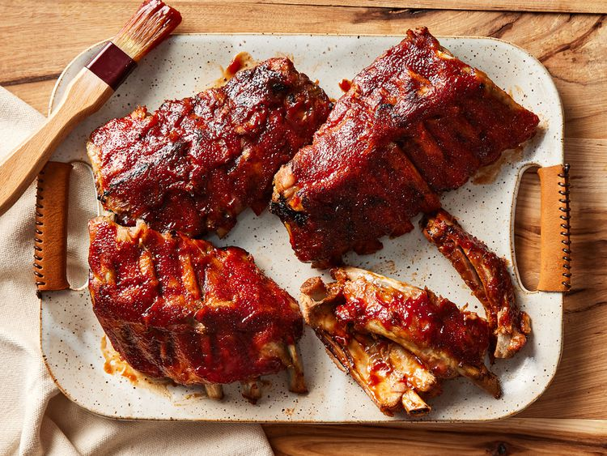

About
Baby Back Ribs

Description
These slow cooker ribs are the best — they turn out perfect every time! They cook in a crockpot until tender, then are covered with barbeque sauce and finished in the oven for fall-apart ribs. Perfect for during the week as the slow cooker does most of the work!
Ingredients
- 3 Pounds Baby Back Ribs
- Salt and Ground Black Pepper
- 1/2 Cup Water
- 1/2 Onion
- 1 Clove Garlic
- 1 Bottle BBQ Sauce
Steps
- Gather all ingredients.
- Season ribs with salt and pepper.
- Pour 1/2 cup water into the slow cooker, then add ribs. Scatter onion and garlic over top. Cover and cook on Low for 8 hours or High for 4 hours.
- When the ribs are almost finished, preheat the oven to 375 degrees F (190 degrees C).
- Transfer ribs from the slow cooker to a baking sheet; discard onion and garlic. Coat ribs with barbeque sauce.
- Bake ribs in the preheated oven until sauce caramelizes and sticks to meat, 10 to 15 minutes.
- Enjoy!